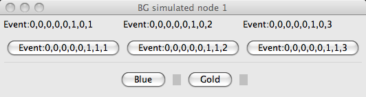

This page demonstrates the OpenLCB Blue/Gold algorithm for easily programming
producers and consumers.
Press the button at the bottom to start the demonstration.

You'll see a monitor window, to see what the protocol does,
plus four windows representing nodes. Each has three consumers set
to specific events, and three producers set to specific events.
The producers are buttons; when you press the button, the event is sent.
If a consumer see's its configured event, it flashes.
Originally, they are all set to unique and different EventIDs.
You use the blue and gold buttons and lights (boxes) to configure
the connections between producers and consumers. Blue is used
to select the ones to be configured, and gold presses do the operations.
An Example
First, let's set the 1st producer in the 1st node to be programmed:
- Press Blue on the 1st node once. The blue light comes on.
- Next, click Gold on the 1st node once to select the 1st producer.
The blue light goes off.
Next, select the 1st consumer on the 2nd board, and tell all selected
producers and consumers to use its event:
- Press Gold to indicate you want to select an event to be learned.
The gold light comes on to indicate this.
- Press Blue on the 2nd node 4 times (three for the producers, then
one more to get to the 1st consumer).
- Press Gold again. The gold and blue lights go off.
Note that the 1st producer on the 1st node is now showing the event number
from the selected consumer. If you press that producer, it sends its event,
and the consumer responds.
How it works
Basically, the blue button selects a producer or consumer, and the
gold button specifies what to do with it.
To select a producer or consumer, just click the blue button the
necessary number of times. Clicks cycle through the producers, then
through the consumers, then back to no selection.
If you lose track, just push the blue button until the light goes
out, then start counting again.
The gold button does commands and modes.
- Push and hold it for 3 seconds, then release, to reset the node
to factory defaults.
- Push it after you pick a producer or consumer with blue to
select that producer or consumer for programming. You can
select as many producers and consumers in a node as you'd like.
- Push it before picking with the blue button to select "programming mode".
The gold LED lights. After you select a producer or consumer (blue LED lit),
clicking gold again will send the corresponding event to be programmed
into all the other selected producers and consumers, and then exit this mode
by turning off the gold LED.
If you've selected producers and/or consumers and want to deselect them,
press and hold the blue button for at least three seconds. All selected
producers and consumers on that node will be unselected.
{kind=link}